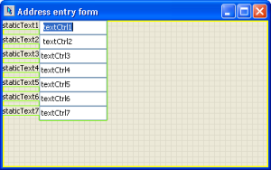
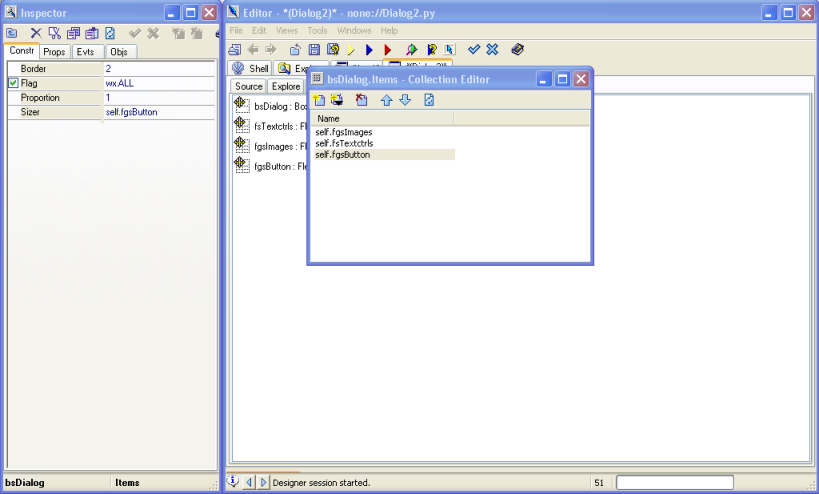
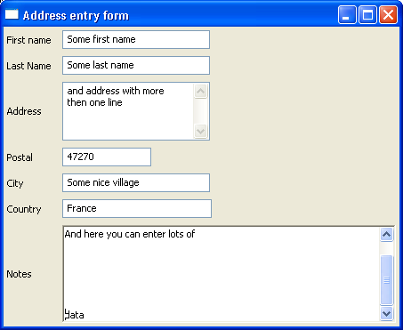
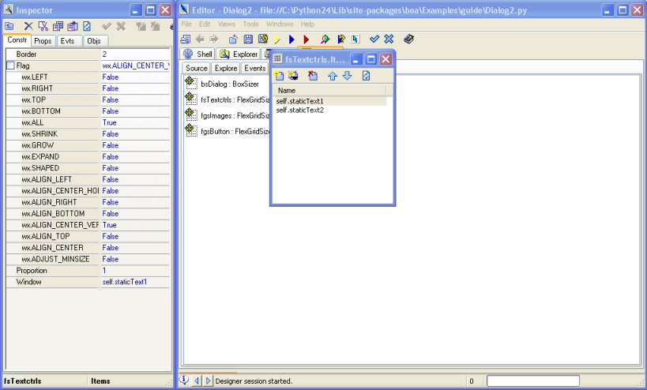

|

|

|

|
Getting Started Guide for Boa Constructor
|

|

|
|
Next:Getting
Started Guide for Boa Constructor Up:Getting
Started Guide for Boa Constructor Previous:Adding
File Menu Functionality
2.8 Creating an application window
using sizers
Sizers are a great way to ensure that your GUI layout is nice and
clean. They come in especially handy when you do not know exactly how
much space a control needs and/or should be allowed to use, this can
be the case when you internationalize your application (I18N) or for
such controls as lists or grids where you like to give as much space
as possible to them (or maybe as little as practical).
Please note that the following will just explain how to use sizers
in Boa (note that this assumes version 0.6.x of Boa). For more
detailed information about sizers you should check the wxPython
documentation, the wxPython demo and you might also find the following links helpful (if not a must!) to understand sizers.
http://wiki.wxpython.org/index.cgi/UsingSizers
http://wiki.wxpython.org/index.cgi/LearnSizers1
http://wiki.wxpython.org/index.cgi/wxDesigner_20Sizer_20Tutorial
We will use a wx.Frame and create
a screen for address information entry.
- Close all the source files in your
editor, so not to add this to the application you created
previously.
- On the palette, select the 'New'
pane. Select the 'wx.Frame' button. This will create a new source
file *(Frame1)*.
- Click on the Save button (or menu
File/Save) and save it as AddressEntry.py.
- Select from the menu Edit the
option Add module runner. This will add some code to your file so
you can run it without having to have a separate wx.App file.
- Save the file and you can run this
application, you will see just Frame1 in the title bar and a grey
background.
- Select the AddressEntry pane.
Start the Designer by clicking on the button
 .
.
- On the palette, select the
'Containers/Layout' pane. Click on the wx.Panel button to select it
and click anywhere within the AddressEntry frame. This will drop the
panel onto your frame.
- On the same palette pane click on
the wx.BoxSizer button to select it and click anywhere on the
wx.Panel you just added to your frame. You should see a yellow line
around your panel.
- Post these changes and save the file and re-open the Designer.
- On the sizer pane, click on the boxSizer1 and rename it to e.g. bsMain.
- Bring the designer to the foreground (e.g. just click on the Designer tool bar button).
- Select the wx.ListCtrl control on the "List Controls" pane and
drop it onto the Designer, this will automagically add it to the bsMain
sizer.
- On the "Containers/Layout" pane select the wx.FlexGridSizer and drop it also onto the wx.Panel, which again will automagically add it to the bsMain sizer.
- Click on the "Sizers" pane and select the flexGridSizer1 and rename it to e.g. fgsFields.
- In the Inspector change the 'Cols'
setting from '0' to '2' and the 'Rows' setting from '1' to '0', as
we will have to columns of controls/widgets in this sizer.
- Post the changes, save the file and open the Designer again. I do
this quit regurarely to ensure that I don't loose too much of my work
if something should go wrong. It is also a good idea to just run
the application to see how it looks.
- In the Inspector change the Name from
'Frame1' to 'AddressEntry' and the Title from 'Frame1' to 'Address
entry form'.
- Select the wx.ListCtrl in the Designer and change the style from
wx.LC_ICON to wx.LC_REPORT and on the "Props" pane click on (Columns)
and then on the "..." to open the Collection Editor for the listctrl.
Create the columns "First name, Last name, City and Country".
- Click on the "Sizers" pane and double click on bsMain to open
it's Collection Editor. Then click on the self.listCtrl1 and
change the Border from 0 to 2 (or what you find appropriate for a
border around this control) and change Flag from 0 to wx.ALL |
wx.EXPAND and change Proportion from 0 to 1. These changes will
ensure that you have 2 pixels space around the listctrl and that it
will use up as much space as is available. If you run this little
application now you will see that the listctrl takes up all the
available space.
- On the "Sizers" pane open the Collection Editor for the fgsFields
sizer and add 12 new items, when you now look at the Designer it will
show these items in red.
- From the "Basic Controls" Palette pane select the wx.StaticText
control and drop it onto the top left red area and to the right of it
drop a wx.TextCtrl and then repeat this until your Designer screen and
the fgsFields collection editor look something along these lines.

- Make sure to rename the controls to names which make sense (i.e. firstName, lastName, address, postalCode, city and country).
- Now we need to set the Border, Flag and Proportion for each of these controls.
- For wx.StaticText I suggest: 2, wx.ALL | wx.ALIGN_CENTER_VERTICAL and 0
- For wx.TextCtrl I suggest: 2, wx.ALL | wx.EXPAND and 0
- On the "Sizers" pane you need to select the fgsFields sizer and
make the second column growable which you can do from the Inspector
"Props" pane by clicking on the "..." next to "(Growables)".
- And for this to take any effect you need to change the Flag for the fgsFields sizer in the bsMain sizer from 0 to wx.EXPAND.
- So, now you should see something like this in the Designer.

- If you run it at this point and resize the window you can see the sizers at work.
- You might also notice that you see scrollbars on the Address
field and it is larger then other fields. For this you need
to change it's style from 0 to wx.TE_MULTILINE and in the Designer you
enlarge it to the hight you want to allocate for it.
- When you run the application you should see something along these lines.

- We will also need some buttons for this, so we can add, delete, save and close this form.
- For this open the Designer again and drop another flexGridSizer
(I will name it fgsButtons) onto the "Sizers" tab and then add it to
the bsMain sizer.
- Then add four items to the fgsButtons sizer and then drop wx.Button controls onto the red squares on the designer.
- In the sizer Collection Editor change the Border to 2, the Flag to wx.ALL for all these buttons.
- Then select the first button by double clicking its entry in the
Collection Editor and in the Inspector "Constr" pane change the label
from button1 to "" (blank) and the name from button1 to "add" and the
Id to wx.ID_ADD.
- Repeat this for the others but name them delete, save and close
and use the appropriate wx.ID_ entries (having access to the stock
button ID's is new in Boa 0.6.0, it will only work if you blank the
label.)

- You should now see something like the above when you run it.
- Obviously you only have the GUI code at this point and one would
have to flesh all this with code for each of the buttons, but for the
moment this goes beyond this tutorial.
Please note that the file generated during this example is
also available in the directory "Examples\guide" under your
Boa installation directory.
For coding guide lines you might also want to consult the wxPython style guide
http://wiki.wxpython.org/index.cgi/wxPython_Style_Guide
.
|
|
|
|
Getting Started Guide for Boa Constructor
|
|
|
|
Next:Getting
Started Guide for Boa Constructor Up:Getting
Started Guide for Boa Constructor Previous:Adding
File Menu Functionality